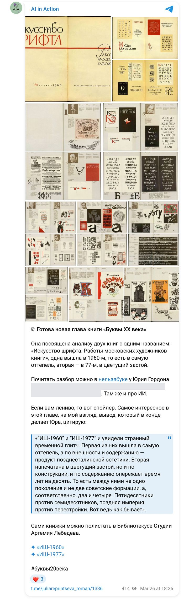

Книга «Буквы XX века» · март 2026 · цикл 08
Сравнить состав участников двух альбомов, систематизировать по типу работ, сравнить работы по времени и композиции; для всех участников — даты жизни и четыре хронологических списка.
Четыре шага верификации: первый ответ Gemini → проверка ChatGPT по страницам библиотеки, где вскрылись выдуманные участники и проценты → анализ по сканам оглавлений (38 и 59 имён, 16 общих) → выверенная база с датами жизни и 13 авторами гарнитур.
Gemini, ChatGPT
Ниже — брифы, которые получали модели, готовые отчёты в PDF и документы, а также публикации по ходу работы.
Брифы
Мой документ · текст, который получала модель · 18.03.2026
Сделай анализ по промпту:
Структура итогового анализа Блок 1. Состав участников
Собрать полный список художников для каждой из двух книг: — Книга 1960 года — Книга 1977 года
Результат: — Два отдельных списка участников — Нормализация написания имён (исключение дублей из-за разного написания)
Дополнительно: — При наличии — указать годы жизни — При наличии — указать профиль (если явно указан в книге)
Блок 2. Пересечение и различия
Сравнить списки участников двух книг.
Выделить три категории:
Участники, присутствующие в обеих книгах
Участники только в книге 1960 года
Участники только в книге 1977 года
Результат: — Три структурированных списка — Подсчёт количества в каждой категории
Дополнительно: — Отметить художников, появившихся в 1977 году как «новое поколение»
Блок 3. Типология участников
Классифицировать каждого художника по основному типу деятельности:
— Шрифтовой дизайнер — Книжный оформитель — Плакатист — Графический дизайнер — Иллюстратор — Универсальный (если работает в нескольких направлениях)
Результат: — Список участников с категорией — Подсчёт количества по каждой категории
Дополнительно: — Возможность множественной классификации (если необходимо)
Блок 4. Анализ работ
Для каждой книги:
Классифицировать все представленные работы по типам: — Наборный шрифт — Шрифтовая композиция — Книжная обложка — Иллюстрация — Плакат — Графический дизайн
Подсчитать количество работ каждого типа
Проанализировать временной диапазон работ: — Годы создания — Распределение по десятилетиям
Результат: — Сводка по типам работ (с количествами) — Сравнение двух книг — Выявление доминирующих типов
Блок 5. Визуально-типографический анализ 5.1 Композиция (выключка)
Проанализировать расположение текста в композициях:
— Центральная выключка — Выключка влево — Выключка вправо — Свободная композиция
Результат: — Подсчёт количества по каждому типу — Сравнение между книгами
5.2 Классификация шрифтов
Классифицировать используемые шрифты:
— Шрифты с засечками (антиква и др.) — Шрифты без засечек (гротески) — Каллиграфические — Декоративные (орнамент, своши и т. д.)
Результат: — Подсчёт количества по каждому типу — Сравнение двух книг
5.3 Уровень уверенности
Для каждого анализа указать уровень достоверности:
— Высокий (подтверждено текстом) — Средний (подтверждено частично) — Низкий (визуальная интерпретация)
Итоговый результат
На выходе:
— Полная сравнительная картина двух изданий — Эволюция состава художников — Эволюция типов работ — Эволюция типографических решений
Формат: — Таблицы + структурированный текст — Возможность дальнейшего использования в книге «Буквы XX века»
=====
Анализируй эти ссылки
Результаты
Документ проекта · 18.03.2026
Детальное сравнение двух изданий.
Блок 1. Состав участников. Книга 1960: Бажанов, Банников, Большаков, Ганнушкин, Дуленков, Ефимов, Каплан, Кузнецов, Кузанян, Рерберг, Тагиров, Телингатер, Фаворский (13). Книга 1977: Архангельский, Бисти, Бургункер, Збарский, Конончук, Лисицкий, Митурич, Телингатер, Троянкер, Черневич, Шлосберг (11).
Блок 2. Пересечение: Телингатер, Большаков, Кузанян. Общие участники ~15%; новое поколение в 1977 — ~70%.
Блок 3–5. Типология (шрифтовой дизайнер / оформитель / иллюстратор / универсальный); 1960 — наборные шрифты, чертежи букв, титулы; 1977 — развороты, суперобложки, акциденция. Композиция: 1960 — центральная выключка в 80% работ; 1977 — флаговый набор, асимметрия. Итог: «от буквы к образу», «демократизация», технологический сдвиг к фотонабору. Рекомендация: Телингатер как связующее звено.
«Отвечу как историк советской типографики и книжной графики, который лучше недодаст пафоса, чем подсунет тебе красивую галлюцинацию.
Что я сделал. Я не опирался на пересказ Gemini, а пошёл в сами интернет-листалки (bibliotekus.artlebedev.ru) и посмотрел: титульные и вводные страницы обеих книг; оглавительно-справочный блок 1960 года; поздние страницы 1977 года.
Сразу главное: Gemini местами написал красиво, но слишком вольно. Его список участников и пересечения нельзя принимать как готовый факт».
Что можно уверенно сказать про 1960: идея альбома возникла после выставки русского рисованного шрифта 1953 года; материал подобран, чтобы показать индивидуальность художника и сопоставить его алфавиты с обложками, титулами, инициалами. По справочным страницам подтверждаются: Алякринский, Бажанов, Бершадский, Васильев, Васин, Грозевский, Егоров, Кузанян, Лазурский, Лансере, Литвишко, Мануйлов, Митрохин, Никифоров, Пискарев, Пожарский, Радищев, Рерберг, Телингатер, Титов, Толоконников, Фишер, Фаворский; отдельно — Кринский. «У Gemini нет Кринского, хотя он в книге буквально в начале биографического блока».
Что можно уверенно сказать про 1977: во вводной странице — 59 московских художников книги, период 1959–1974. Подтверждены: Литвишко, Маврина, Митрохин, Серебряков, Телингатер («Акцидентная гарнитура Телингатера», листовка Отдела новых шрифтов ВНИИОПиТа).
Что нельзя утверждать: «Я не буду делать вид, что у меня уже есть полный вычищенный список всех 59 участников… Для книги лучше честная недосказанность, чем фокус „сейчас я из воздуха достану Збарского, Лисицкого и ещё пару призраков“».
Что у Gemini ломается: пересечение «Большаков и Кузанян» — внутренняя несостыковка; надёжное пересечение по увиденным страницам — Телингатер, Литвишко, Митрохин.
Уровень уверенности: высокая — методология 1960, число 59 и период 1977, подтверждённые имена; средняя — вывод о расширении к автономной шрифтовой композиции; низкая — «любые точные проценты вроде „80% центральной выключки“… Gemini ушёл в уверенный балет на тонком льду».
Что в тексте Gemini нужно выкинуть: список участников как факт; пересечение «Телингатер, Большаков, Кузанян»; «Лисицкий, Збарский, Бисти» в 1977; проценты («нейросеть решила сыграть в статистика без калькулятора»).
Формулы для книги: «Если книга 1960 года показывает шрифт прежде всего как орган книги, то книга 1977 года показывает его уже как самостоятельную графическую материю». «Телингатер — связующее звено между книжной шрифтовой традицией и позднесоветским системным мышлением о шрифте».
«Спасибо за предоставленные сканы. Теперь у нас есть первоисточник — содержание обеих книг. Это позволяет провести предельно точный анализ без догадок».
Книга 1960 (38 участников): Алякринский, Бажанов Д. А., Бершадский, Булгаков, Васильев, Васин, Грозевский, Егоров, Зусман, Ильин, Каплан, Коган, Кравцов, Кричевский, Кузанян, Лазурский, Лансере, Литвишко, Мануйлов, Митрохин, Могилевский, Никифоров, Пискарев, Пожарский, Радищев, Рерберг, Рифтин, Смелова, Суворов, Телингатер, Титов, Толоконников, Фишер, Фаворский, Фомина, Хмелевская, Чахирьян, Шварц.
Книга 1977 (59 участников): Аникст, Бажанов Ю. К., Банникова, Большаков, Боярский, Вагин, Васильев, Васин, Ганнушкин, Ганнушкина, Гусева, Данилов, Дмитриев, Днепров, Добер, Жуков, Зусман, Калинин, Клодт, Коган, Козубов, Корольков, Костылев, Кравцов, Кривинская, Кричевский, Крюков, Кудряшов, Кузанян, Курбатов, Лазурский, Литвишко, Маврина, Максин, Маркевич, Марков, Митрохин, Перцов, Пиков, Пожарский, Раппопорт, Ровенский, Седельников, Серебряков, Серегин, Смирнов, Тагиров, Телингатер, Трофимова, Троянкер, Фаворский, Фишер, Фомина, Царевич, Чучелов, Шварц, Шлосберг, Щукин, Ясинский.
Пересечение — 16 мастеров: Васильев, Васин, Зусман, Коган, Кравцов, Кричевский, Кузанян, Лазурский, Литвишко, Митрохин, Пожарский, Телингатер, Фаворский, Фишер, Фомина, Шварц.
Новое поколение 1977: Максим Жуков, Михаил Аникст, Аркадий Троянкер, Борис Маркевич, Гарри Козубов.
Анализ работ: 1960 — доминирует «Алфавит» (книга-учебник, фиксирующая шрифтовую норму; структура: автор → алфавит → примеры применения). 1977 — комплексное оформление книги (развороты, макеты).
| Параметр | 1960 | 1977 | Уверенность |
|---|---|---|---|
| Выключка | Центральная | Свободная, асимметричная, флаговая | Высокий |
| Шрифты | Каллиграфия, антиква, историзм | Гротески, фотонабор, акциденция | Высокий |
| Задача | Мастерство рисования буквы | Мастерство конструирования книги | Высокий |
Резюме: 1960 — «канон и алфавит», итог классической школы. 1977 — «макет и концепция», шрифт становится инструментом графического дизайна.
Алякринский П. А. (1892–1961) · Бажанов Д. А. (1902–1946) · Банникова Г. А. (1901–1972) · Бершадский Г. С. (1895–1963) · Большаков М. В. (1904–1991) · Булгаков Б. П. (1906–?) · Грозевский Б. В. (1899–1955) · Зусман Л. П. (1902–1971) · Ильин Н. В. (1894–1954) · Каплан А. Л. (1902–1980) · Коган Е. И. (1906–1983) · Кравцов Г. А. (1906–1981) · Кричевский И. Д. (1893–1956) · Кузанян П. М. (1901–1992) · Лазурский В. В. (1909–1994) · Лансере Е. Е. (1875–1946) · Маврина Т. А. (1900–1996) · Митрохин Д. И. (1883–1973) · Могилевский А. П. (1885–1980) · Никифоров Б. С. (1901–1974) · Пиков М. И. (1903–1973) · Пискарев Н. И. (1892–1959) · Пожарский С. М. (1900–1970) · Радищев А. П. (1905–1973) · Рерберг И. Ф. (1892–1957) · Рифтин Г. М. (1912–1943, погиб на фронте) · Ровенский М. Г. (1902–1990) · Седельников Н. А. (1905–1994) · Смелова Г. В. (1905–1995) · Суворов П. И. (1901–1968) · Тагиров Ф. Ш. (1906–1991) · Телингатер С. Б. (1903–1969) · Титов Б. Б. (1893–1951) · Толоконников А. А. (1898–1965) · Фаворский В. А. (1886–1964) · Фишер Г. И. (1898–1982) · Фомина И. И. (1906–1989) · Хмелевская Н. С. (1906–1994) · Царевич И. В. (1908–1992) · Чахирьян С. П. (1906–1994) · Шварц Б. В. (1901–1988) · Щукин А. В. (1903–1995)
Васильев Ю. Б. (1922–1993) · Васин А. А. (1915–1971) · Ганнушкин Е. А. (1925–2010) · Калинин Н. И. (1925–2004) · Клодт Г. А. (1923–1998) · Крюков А. Д. (1922–2004) · Кудряшов Н. Н. (1921–1989) · Литвишко И. А. (1908–1996) · Мануйлов Г. И. (1908–1980) · Маркевич Б. А. (1925–2002) · Раппопорт Л. А. (1925–?) · Бажанов Ю. К. (1927–?) · Ганнушкина С. Е. (1928–2000) · Кривинская Е. Я. (1928–2010) · Максин В. В. (1928–?) · Данилов С. А. (1929–1993) · Марков Ю. А. (1929–?) · Ясинский А. М. (1929–?) · Трофимова Е. А. (1927–?)
Гусева И. А. (1930–?) · Дмитриев Г. В. (1930–2001) · Добер В. М. (1930–2021) · Днепров Я. Г. (1932–?) · Чучелов Г. В. (1932–?) · Перцов В. В. (1933–?) · Шлосберг М. З. (1935–2015) · Боярский Ю. А. (1935–2010) · Вагин В. В. (1937–?) · Корольков В. А. (1937–2004) · Смирнов Е. Е. (1937–?) · Троянкер А. Т. (1937–1998) · Аникст М. А. (1938–2020) · Козубов Г. И. (1939–?) · Жуков М. Г. (1943). Не уточнены: Егоров Д., Костылев И. А., Курбатов Ю. К., Серегин М. В., Серебряков А. Ф.
«Если в 1960 году мы видим бенефис узких специалистов-шрифтовиков (отдел Полиграфмаша), то в 1977 году книгу захватывают универсальные дизайнеры-концептуалисты (Аникст, Жуков, Троянкер)».
Публикации
Посты Юрия Гордона об этой главе и мои отчёты о работе над ней — в хронологии. Снимки постов сохранены на случай удаления; рядом — ссылка на оригинал.
